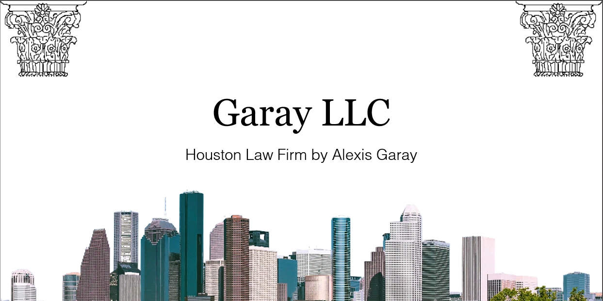

Web Dev
Web Dev
Web Dev · 5 min read
News Site: United Chronicle
A project on designing various important pages of a fictional newspaper website. AI was only used for the vectorization of the logo.
This is:
A bilingual writer, designer, video editor, and photographer, handling creative projects cleanly and diligently.

Alexis Garay is a 1st Generation American born in Houston, Texas, son of Spanish-speaking Salvadoran immigrants. As a writer, he analyzes and creates media through a technical, historical, and cultural lens. He is studying for a Bachelor of Arts in Creative Media Industries, granting him a diverse skillset tailor-made to navigate the modern media landscape.
He has travelled internationally four times, three when visiting El Salvador, and once when going to Ireland to study abroad. Through those trips, he internalized the value of cultural mythologies, the importance of maintaining personal histories, and how individuals interact with foreign cultures.

Served as Ambassador for the Tech Philosophy Club from Fall '25 to Spring '26, presenting and facilitating philosophical conversations.
Worked as Script Supervisor for the Tech Creative Media Association short film "Go For It" (2025).
Served as leader in Lone Star College - Kingwood's Honors College Leadership Program during Spring '24.
Web Dev
Web Dev · 5 min read
A project on designing various important pages of a fictional newspaper website. AI was only used for the vectorization of the logo.
 Web Dev
Web Dev
Web Dev · 3 min read
A project on designing the landing page of a fictional social media website. AI was only used for the vectorization of the logo.
 Writing
Writing
Writing · 10 min read
A case study in developing an original character, Heart-Man. Explains how to translate him into interactive media, such as a video game.
Filming · 4 min watch
An interview with my partner about dealing with physical disabilities. A showcase of my editing and videography skills.

PresentationPresentation · 14 min read
A PowerPoint presentation about a hypothetical law firm. ChatGPT was only used for the startup budget.
 Game Dev
Game Dev
Game Dev · 6 min playtime
A murder mystery within the Bitsy Game Engine. Figure out the family member who killed Steven Bender.